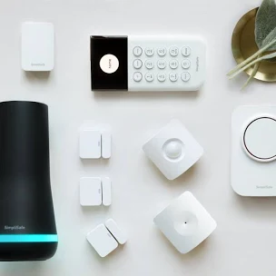

One of the first decisions you'll make before building out your own smart home is weighing security features against convenience features. Most of the packages you'll encounter will emphasize one or the other, even if they offer elements of both.If you're mostly interested in being alerted to a break-in, or a disaster such as a fire or a burst water pipe, you'll be happier with a home security system perhaps one with a service that can dispatch first responders on your behalf.But if you're more interested in the fun and convenience of a modern home technology having lights turn on and off with voice commands, for example, or having a sprinkler system that operates in concert with the local weather you'll want a smart home system. We've produced two stories that will help you understand the fundamentals of each type of system, so you can decide which is right for you. This one focuses on smart home systems. If you' re more interested in a home security system, we encourage you to read this other story.
The basics of a home security system
The home security business has been upended in recent years, driven by the availability of always on broadband services, low-cost wireless technology, and most recently smart home technology. In years past, a service provider would send a technician to your home to install a big metal box in your closet, connect it to your land line, and run wired sensors to all your doors and windows. You'd need to sign up for an expensive long-term contract for professional monitoring, without which the system would be useless.You can still buy professionally installed systems from vendors such as ADT, Vivint, or even Comcast with monitoring included in the price of the package. But a do it yourselfer can acquire equipment that's every bit as good, if not always as flashy, and have it up and running in an hour or two. Opt-in professional monitoring is available with many of these systems, but if you're looking to save even more money, some vendors let you monitor your own security using a smartphone app for free.Some localities require you to obtain a permit before installing an alarm system, and they might charge you a fee if their first responders are dispatched based on a false alarm. The vendor you're considering doing business with should be able to tell you if such a permit is required where you live.
Home security system kits
Most security systems are sold as kits, which ensures that all the components are known to work together. What comes in a security system starter kit? That will vary from one manufacturer to another, but the typical kit will include:
1. A hub that connects to your router, either wirelessly or with an ethernet cable. This is the "brains" of the system. There will be a siren to warn you and frighten an intruder, and a keypad you'll use to arm the system when you leave or retire for the night, and disarm when you come home or wake up and start your day. In some systems, the alarm, hub, and keypad will all be in the same enclosure.
2. More advanced hubs will contain a battery backup and a cellular radio, so that alerts are sent even if you lose power or your broadband connection goes down. In most cases, however, you'll have to pay a monthly fee for that peace of mind.
3. Door/window sensors: These are small, typically two-piece devices that attach to your doors and windows via tape or screws. One side of the sensor has a magnet and the other a small piece of steel. Separating the two breaks the magnetic field between them and sends a signal to the hub to report that the door or window has been opened. The hub can typically be programmed with a delay that allows you to open a door, walk to the keypad, and disarm the system before the alarm goes off. Window sensors trigger an immediate alarm, since no one should be entering or exiting the home via a window.
4. At least one motion sensor that will detect movement within its field of view. When you plan to remain in the house, you'll arm your system "home" or "stay," and the hub will ignore messages from the motion sensor. When you leave the house and arm the system "away," any unexpected movement will trigger the hub to go into an alarm state. Most motion sensors include a pet mode that will prevent small animals from triggering false alarms.
It's always a good idea to count the number of doors and windows you'll want to monitor, because the starter kit probably won't have enough to cover all of them. But here's a pro tip: One motion sensor can cover at least one door and several windows, depending on where it's placed. It might not trigger an alarm immediately after a breach, but there shouldn't be an appreciable delay before an intruder sets it off by walking in front of it.


Beyond home security basics
Some home security systems provide or allow you to add other security components, such as:
1. A remote key fob or a secondary keypad: Your most frequent interactions with your security system will probably occur via a smartphone app, but better systems offer more flexibility. You might set up a second keypad at another entry location, or push a button on a remote control on your keychain to arm and disarm the system. Nest Labs offers an NFC-enabled remote that you tap on its hub to disarm its Nest Secure system, which might be easier for children to work with.
2. Glass break/vibration sensors: These sensors either listen for the specific pitch of glass breaking or adhere to a window, monitoring for the vibrational shock of damage, tripping the alarm if a break is detected.
3. Smoke and/or carbon monoxide detectors: Many security vendors have been expanding their definition of security by adding the option to protect your home and its occupants from smoke, fire, and carbon monoxide.
4. Water leak sensors: Insurance claims for water damage from burst pipes and similar disasters are far more common than fires, so a system that can warn you of the presence of water where it shouldn’t be can deliver big benefits.
Monitor it yourself, or pay a professional?
Your final consideration with a home security system is how to monitor it. Some vendors give you the option of doing it yourself for free, while others don't give you a choice. If you opt for self monitoring, know that it means you're responsible for keeping tabs on your own security, whether you're at home or not. If you get a notification from the app that your alarm has been tripped, you'll need to decide whether to call the police or fire department, ask a neighbor to investigate, or simply ignore it and hope for the best.
Professional monitoring is typically offered as a subscription service, but many companies expect you to sign a contract committing to the service for a year or longer and in some cases, much longer. Cancelling the contract before the term is up can leave you owing an early termination fee. Ring offers one of the least expensive optional monitoring plans: $10 per month for Ring Alarm users, and that includes cloud storage for an unlimited number of Ring cameras. What's more, you can cancel any time. But if Ring Alarm doesn't fit your needs, it doesn't matter how cheap the service plan is.
So what do you get from a professional monitoring plan? In almost all cases, a 24-hour watch by human beings who will call to check on you if an alarm is triggered. If they can't reach you, they'll attempt to contact any secondary contacts you've provided. And if they can't get in touch with anyone, they'll call the police if a break in is suspected or with plans that include smoke alarm coverage the fire department if there's a fire. Professional monitoring fees typically also cover the cost of backup cellular service for the hub.
Service fees, terms, and the fine print that accompany professional monitoring services vary widely. If you sign up for a plan, make sure you understand exactly what you're getting into. You'll also want to be aware that self monitoring is not an option with some home security service providers.
Getting the best of both worlds
If you want a home security system that can also be used as a smart home system, pick one that at a minimum supports smart lighting and a smart thermostat, along with all the most important security features we've already discussed.
Whichever type of system you settle on today, know that you won't be locked into it forever, provided it's based on the most common types of radios: Wi-Fi and either Z-Wave or ZigBee. No one vendor controls all of those standards, and many of the hubs on today's market today use all three.
While it might be little tedious to re pair tens or dozens of sensors and other devices with a new hub if something better catches your fancy in a few years, it won't be impossible.